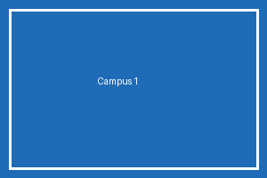
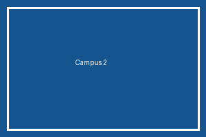

这里是一个 Python 爬虫课程的练习小站～所有内容都是虚构的哦，放心爬吧！✨
Ctrl + U（或右键 → 查看网页源代码），
你会看到这个网页的 HTML 源代码。爬虫的本质，
就是让程序去读取并解析这份源代码，再把你要的信息"抠"出来。
所以——不会看源代码，就写不好爬虫。下面的每一个板块，
都藏着一条爬虫知识点，边看边学吧！🐞
<a href="链接地址">链接文字</a> 是「超链接」标签：
href 属性存的是跳转地址，标签中间的文字是显示在页面上的内容。
爬虫要提取新闻列表，就是在源代码里找到这些 <a> 标签，
分别取出它们的 href（链接）和文字（标题）。# 用 BeautifulSoup 提取所有新闻标题和链接
for a in soup.select('a.c75870'):
print(a.text, '->', a.get('href'))
🔎 请到源代码里找一找：这里的 a 标签有个共同的 class 叫 c75870，
它就是爬虫用来"锁定"新闻链接的标记。
<ul>（无序列表）里面套着一堆 <li>（列表项）。
这个列表有个 id="colors"，id 在页面里是唯一的，
所以爬虫常用 id 来精确定位某个元素。# 用 CSS 选择器提取 #colors 下所有 li 的文本
items = soup.select('#colors li')
for li in items:
print(li.get_text())
🔎 想一想：ul 和 li 是什么关系？谁在谁里面？
| 书名 | 作者 | 价格 | 馆藏状态 |
|---|---|---|---|
| Python编程从入门到实践 | Eric Matthes | 89.00 | ✅ 可借 |
| 流畅的Python | Luciano Ramalho | 139.00 | 📌 已借出 |
| 利用Python进行数据分析 | Wes McKinney | 119.00 | ✅ 可借 |
| 爬虫实战：从数据采集到数据清洗 | 崔庆才 | 99.00 | ✅ 可借 |
<table> 包裹，每一行是 <tr>，
行里的每个单元格是 <td>（表头用 <th>）。
爬虫提取表格，就是先找到所有 tr，再在每一行里取所有 td。# 提取表格每一行的数据
for tr in soup.select('table tr'):
cells = [td.get_text() for td in tr.select('td')]
if cells:
print(cells)
🔎 观察源代码：th 和 td 有什么不同？


<img> 里，真正存放图片网址的属性可能是 src，
也可能是 data-src（懒加载时图片地址常放在这里）。
爬虫要根据源代码的实际结构来写正则表达式——先观察，再写规则。import re pattern = 'data-type="png" data-src="(.+?)"' urls = re.findall(pattern, html)🔎 对比一下：这个页面里
src 和 data-src 的值一样吗？
为什么要同时写两个？
<a> 的 href 提出来，
再按条件筛选——比如只保留以 http 开头的绝对地址。links = re.findall(r' 🔎 想一想：news/news1.html这种不以 http 开头的叫什么？ 叫「相对地址」，需要和当前网址拼起来才能用（试试urljoin）。